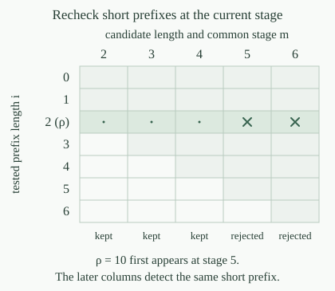

Use the coded finite binary words and record an infinite sequence by its set \(X\subseteq\mathbb N\) of one-positions. Write \(X\mathbin{\upharpoonright}n\) for its length-\(n\) prefix. A forbidden family is a collection \(F\) of finite binary words whose numerical code set is c.e. Its avoidance class is
A collection of binary sequences is effectively closed if it equals \(\mathcal P(F)\) for some forbidden family. Listing one forbidden word excludes every sequence extending it. The empty forbidden family permits every sequence; a family containing the empty word permits none. No enumeration of the surviving infinite sequences is part of this definition.
Fix an index \(r\) enumerating the codes of \(F\). Let \(F_s=\{\rho:u_\rho\in W_{r,s}\}\), restricting to binary words, using the uniform increasing finite stages. Thus \(F_s\subseteq F_{s+1}\) and \(F=\bigcup_sF_s\). Define the common-stage tree \(T_r\) by the following test on a binary word \(\sigma\), with \(m=|\sigma|\):
Every prefix, including the empty prefix and the entire word, is checked through the same stage \(m\). In particular a short prefix is examined for more enumeration time when it occurs inside a longer candidate word.

For every \(r\), \(T_r\) is a computable binary tree. Moreover one primitive-recursive numerical map \(q\) supplies a decider index \(q(r)\) for this specified tree, rejecting invalid binary-word codes.
On a candidate code, decode its finite list and reject it unless every entry is a bit. For a valid word of length \(m\), form its \(m+1\) prefix codes and test membership in \(W_{r,m}\). These stage tests and finite word operations are primitive recursive. A bounded loop returns one exactly when none succeeds, and zero otherwise. This is a single jointly computable procedure in \(r\) and the word code. Choose its program index \(v\) once; the parameter theorem gives the particular primitive-recursive index map \(q(r)=s(v,r)\). Every resulting test terminates.
For prefix closure, suppose \(\tau\preceq\sigma\in T_r\), with \(|\tau|=n\le m=|\sigma|\). If some prefix \(\tau\mathbin{\upharpoonright}i\), \(i\le n\), belonged to \(F_n\), it would belong to \(F_m\) by monotonicity. It is the same word as \(\sigma\mathbin{\upharpoonright}i\), contradicting the successful test for \(\sigma\). Thus \(\tau\in T_r\), as required.
For the specified tree \(T_r\) and forbidden family \(F\),
Consequently a collection of binary sequences is effectively closed if and only if it is the path class of a computable binary tree.
If \(X\) avoids every word of \(F\), no prefix of \(X\mathbin{\upharpoonright}m\) belongs to \(F_m\subseteq F\). Hence each length-\(m\) prefix lies in \(T_r\), so \(X\in[T_r]\).
Conversely, suppose \(X\in[T_r]\), but \(\rho=X\mathbin{\upharpoonright}i\in F\). Choose a stage \(k\) with \(\rho\in F_k\), and put \(m=\max(i,k)\). The length-\(m\) prefix of \(X\) tests \(\rho\) through stage \(m\). Since \(F_k\subseteq F_m\), that test fails, contradicting the path assumption. This also handles \(i=0\), when the empty word is forbidden.
This proves the forward representation. In the other direction, if \(T\) is a computable binary tree, let \(F\) consist of its missing binary words. Their codes form a decidable, hence c.e., set: check binary validity and then the tree decider. Avoiding \(F\) says precisely that every prefix belongs to \(T\). Thus \(\mathcal P(F)=[T]\), completing the equivalence.
The exact equality of path classes also transfers the hyperimmune-free basis theorem: every nonempty effectively closed binary class contains a member whose total numerical oracle computations each have an ordinary computable bound.
A binary tree \(S\) is a co-c.e. binary tree if its missing binary words form a forbidden family. Equivalently, its set of numerical word codes is co-c.e.: invalid binary-word codes can be rejected by a decidable test, so including them in the complement does not change enumerability.
The prefix-closure requirement belongs to being a tree. It is separate from the effective ability to enumerate the complement. A co-c.e. tree need not have a decision procedure for membership.
Let \(S\) be a co-c.e. binary tree, and let \(r\) enumerate its missing binary words. The specified computable tree \(T_r\) satisfies \([T_r]=[S]\), with its decider supplied uniformly by \(q(r)\).
Put \(F=2^{<\omega}\setminus S\). A sequence belongs to \(\mathcal P(F)\) exactly when every prefix belongs to \(S\), which is the definition of membership in \([S]\). Apply and to this very complement enumeration. The conclusion is equality of path classes; it does not assert equality of the two collections of finite words.
Let \(S\) consist of the all-zero finite words. For each stage \(s\), enumerate the finite family
It is an increasing computable sequence of finite sets enumerating all missing words of \(S\). What tree would the alternative rule \(\forall i\le|\sigma|\;(\sigma\mathbin{\upharpoonright}i\notin F_i)\) produce? Compare its paths with those of \(S\).
A word of length \(i\) is never in \(F_i\), because the defining condition requires its length to be strictly less than the stage. Every tested prefix therefore passes the alternative rule, for every binary word. That rule produces the full binary tree, with every binary sequence as a path. The tree \(S\) has just the all-zero path, so the path classes differ.
The enumeration is legitimate: only the finitely many codes below \(s\) are considered, the displayed tests terminate, and both bounds persist at later stages. Every word containing one appears once \(s\) exceeds its code and length. The common-stage rule detects such a forbidden prefix in every sufficiently long extension, by the maximum-stage argument in . A late discovery must remain visible when its short prefix is reconsidered.
If \(\mathcal P(F)\ne\varnothing\), the common-stage tree \(T_r\) has nodes at every length, and its specified halting-selected path \(X_{T_r}\) belongs to \(\mathcal P(F)\) and satisfies \(X_{T_r}\le_T K\).
A member of the class is a path through \(T_r\) by ; its prefixes witness all the nonempty levels. The tree is computable by . Apply the halting-oracle path theorem to obtain the stated path and reduction, then use the same path equality again. No computable member is asserted, and the nonemptiness assumption is essential.
The low basis theorem gives a low member of every nonempty effectively closed binary class.
Use the fixed ordinary numbering \(\varphi_e\). A total function \(f:\mathbb N\to\mathbb N\) is diagonally noncomputable, or DNC, if
It must disagree whenever the diagonal computation is defined. A divergent diagonal computation imposes no restriction at that position, but \(f\) is still required to have a value there. The binary DNC class is \(\mathcal D_2=\{X\subseteq\mathbb N:\chi_X\text{ is DNC}\}\), using the total characteristic function with value one on \(X\) and zero outside \(X\).
Every DNC function is noncomputable. In particular no member of \(\mathcal D_2\) is a decidable set.
If a total computable \(f\) were DNC, program completeness would give an index \(j\) with \(\varphi_j(x)\downarrow=f(x)\) for every \(x\). At \(x=j\), this defined self-computation has output \(f(j)\). The DNC requirement would then say \(f(j)\ne f(j)\), a contradiction. A decidable \(X\) would have a total computable \(\chi_X\), so the same argument excludes it from \(\mathcal D_2\).
Define the diagonal forbidden family
Only binary words are included. A word is forbidden once some diagonal computation agrees with one of its already specified bits. An output other than zero or one cannot agree with a bit and therefore creates no such prohibition.
The family \(F_{\mathrm{DNC}}\) is c.e., and \(\mathcal P(F_{\mathrm{DNC}})=\mathcal D_2\).
For a binary-word code, search pairs \((e,k)\) with \(e<|\sigma|\) and \(b(k,e,e)=\sigma(e)+1\), using the bounded evaluator. Each candidate is a terminating finite test; the search halts exactly on the forbidden words. On an invalid binary-word code, remain undefined. The finite-certificate characterization makes the family c.e.
If \(\chi_X\) is DNC, no prefix can contain a diagonal agreement, so \(X\) avoids this family. Conversely, if the total function \(\chi_X\) fails the DNC condition, some \(e\) has \(\varphi_e(e)\downarrow=\chi_X(e)\). The prefix of length \(e+1\) is then forbidden. Thus avoidance is exactly the DNC requirement, proving the equality.
Let \(A=\{e:\varphi_e(e)\downarrow=0\}\) and \(B=\{e:\varphi_e(e)\downarrow=1\}\) be the diagonal output sets. For every \(X\subseteq\mathbb N\),
Hence \(\mathcal D_2=[T_{a,b}]\) for the already constructed separator tree of fixed indices \(A=W_a\), \(B=W_b\).
If \(e\in A\), avoiding the output zero forces the binary value \(\chi_X(e)=1\), so \(e\in X\). If \(e\in B\), avoiding one forces \(\chi_X(e)=0\), so \(e\notin X\). These are precisely the two separator requirements.
Conversely a separator has those forced bits. A defined diagonal output zero or one is therefore avoided. A defined output at least two differs from either bit automatically; divergence imposes no condition. This covers every diagonal computation and proves that \(\chi_X\) is DNC. The equality with the separator-tree paths now follows from the established path characterization. The bit convention is one on \(A\) and zero on \(B\).
The diagonal pair is universal for disjoint c.e. pairs. Thus, for any such pair, a computable preimage of a separator here gives a separator there; the preimage construction retains the freedom on numbers outside the two required sides.
The effectively closed class \(\mathcal D_2\) is nonempty and has no computable member. In particular the specified halting-selected path \(X_{T_{a,b}}\) is a binary DNC set and \(X_{T_{a,b}}\le_T K\).
The diagonal sets are disjoint and c.e., so their separator tree is computable and has nodes at every length. Its halting-selected path exists and is computable from \(K\) by the specified path theorem. The equality in puts this very set in \(\mathcal D_2\). Effective closedness is , and excludes every computable member.
The tree from the common-stage forbidden-family conversion also has this path class. It need not have the same finite nodes as the separator tree. Either representation describes the same infinite binary choices.
There is also a noncomputable low binary DNC member.
Computing a binary DNC set is equivalent to computing a PA completion and selecting a path through every computable binary tree with an infinite path. The equivalence uses an explicit contradiction-search completion procedure and a computable reduction of two dead-child lists to the diagonal separator pair.
The partial function \(g(e)\simeq\varphi_e(e)+1\) differs from every defined diagonal output where it is defined. Why does this not contradict ? Also, at an index whose self-computation returns two, which bits are allowed for a binary DNC function?
The function \(g\) is partial recursive by universal evaluation and successor, but it is not total. Take an index of the nowhere-defined function; its diagonal run diverges, so \(g\) is undefined there too. DNC requires a value at every input, including such indices. This is the same partial diagonal calculation that survives the usual total-function diagonal argument.
If the diagonal output is two, both zero and one differ from it. Both bits are therefore permitted at that position. Such an index lies in neither \(A\) nor \(B\), in agreement with the separator characterization. The binary condition does not require the diagonal computation itself to have binary output.